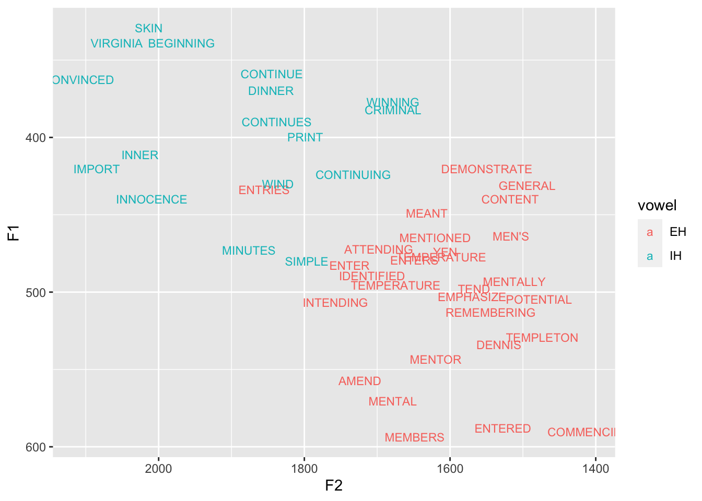
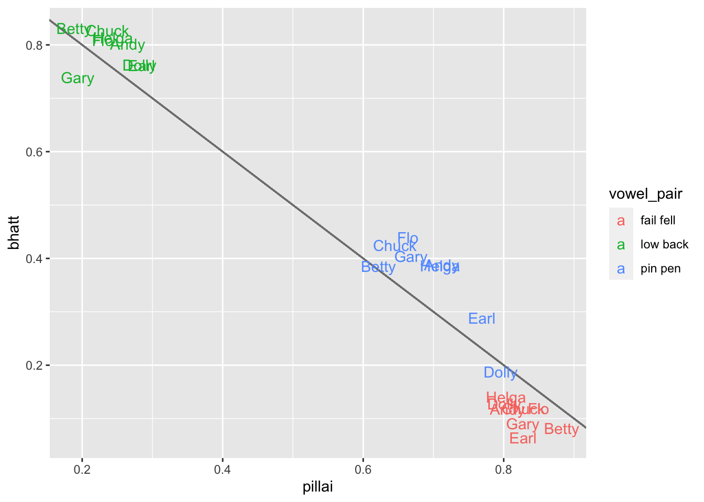

options(dplyr.summarise.inform = FALSE)This is a continuation of my previous tutorial on how to calculate Pillai scores and Bhattacharyya’s Affinity in R for the purposes of measuring vowel overlap. It occurred to me as I was putting the previous one together though that I had a lot of things to say and the tutorial got really long and complicated. So I moved all the more advanced topics to this one to keep the main one a little lighter and more approachable.
In this post, I’ll cover some topics like what to do if you have multiple vowel pairs you want to measure in each speaker, errors you may encounter with the select function when you’re calculating Bhattacharyya’s Affinity, ways at making the functions less error-prone, and some visualizations you can do with your data after you’ve collected it.
Note
Update (November 23, 2021): Betsy Sneller and I have done some recent research on Pillai scores. Please see the summary of our ASA2021 poster (and the paper itself) for more information.
Data prep
The data prep for this post is covered in Part 1 already, so I’ll put the code here without further comment.
library(tidyverse)my_vowels <- read.csv("../../data/joey.csv") %>%
filter(stress == 1) %>%
select(vowel, word, dur, F1.50., F2.50., fol_seg, plt_manner, plt_place, plt_voice) %>%
rename(F1 = F1.50., F2 = F2.50.) %>%
mutate(fake_speaker = sample(c("Joey", "Stanley"), nrow(.), replace = TRUE))low_back <- my_vowels %>%
filter(vowel %in% c("AA", "AO"),
!fol_seg %in% c("L", "R"),
word != "ON")So where I left off at the last tutorial was a function that can calculate the Pillai score and another for the Bhattacharyya’s Affinity, each with the help of summarize:
pillai <- function(...) {
summary(manova(...))$stats["vowel","Pillai"]
}
bhatt <- function (F1, F2, vowel) {
vowel_data <- droplevels(data.frame(vowel))
sp_df <- sp::SpatialPointsDataFrame(cbind(F1, F2), vowel_data)
adehabitatHR::kerneloverlap(sp_df, method='BA')[1,2]
}
low_back %>%
summarize(low_back_pillai = pillai(cbind(F1, F2) ~ vowel),
low_back_bhatt = bhatt(F1, F2, vowel)) low_back_pillai low_back_bhatt
1 0.2250877 0.8296413Okay cool. Let’s see what else can be done with this.
Multiple vowel pairs
What I’ve shown so far is how to calculate the Pillai score for multiple speakers for a single pair of vowels. The next question is what how to get the Pillai score for multiple speakers for multiple pairs of vowels.
Unfortunately, I don’t really know of a quick way to do that. The problem is a single vowel might be used in multiple pairs (like measuring
The easiest solution I can think of is to define separate datasets like we’ve done with low_back and run the same code on them. That way, you have all the flexibility of defining specific allophones for each question. And, you probably won’t be getting the Pillai score on too many pairs of vowels, right?
Let’s make two more subsets. First, I’ll look at the pin-pen merger which I don’t really have, but is common in the South where I live right now. (I’ll also remove some stop words from the dataset.) I’ll also look at the fail-fell merger, which I also don’t really have, but can be found in places like Utah and parts of Texas. I’ll create these subsets and plot them so you can see what they look like in my own speech. Maybe you can roughly estimate the Pillai score.
pin_pen <- my_vowels %>%
filter(vowel %in% c("IH", "EH"),
fol_seg %in% c("M", "N"),
!word %in% c("IN", "INTO"))
head(pin_pen) vowel word dur F1 F2 fol_seg plt_manner plt_place plt_voice
1 EH MEANT 0.06 448.8 1631.9 N nasal apical voiced
2 EH MENTAL 0.06 570.5 1678.6 N nasal apical voiced
3 EH ENTER 0.12 482.7 1738.0 N nasal apical voiced
4 IH BEGINNING 0.05 338.9 1968.6 N nasal apical voiced
5 EH TEMPERATURE 0.06 495.6 1674.6 M nasal labial voiced
6 EH TEMPERATURE 0.05 477.2 1612.0 M nasal labial voiced
fake_speaker
1 Stanley
2 Joey
3 Joey
4 Joey
5 Joey
6 Stanleyggplot(pin_pen, aes(F2, F1, color = vowel, label = word)) +
geom_text(size = 3) +
scale_x_reverse() + scale_y_reverse()
fail_fell <- my_vowels %>%
filter(vowel %in% c("EY", "EH"), fol_seg =="L")
head(fail_fell) vowel word dur F1 F2 fol_seg plt_manner plt_place plt_voice
1 EY AILMENTS 0.06 387.3 2149.5 L lateral apical voiced
2 EY SAILOR 0.08 382.5 1898.5 L lateral apical voiced
3 EH CELLPHONE 0.09 509.4 1549.1 L lateral apical voiced
4 EY SURVEILLANCE 0.09 468.9 2104.8 L lateral apical voiced
5 EY TAYLOR 0.05 311.7 2069.7 L lateral apical voiced
6 EH ELSE 0.06 583.1 1343.6 L lateral apical voiced
fake_speaker
1 Joey
2 Stanley
3 Joey
4 Stanley
5 Stanley
6 Joeyggplot(fail_fell, aes(F2, F1, color = vowel, label = word)) +
geom_text(size = 3) +
scale_x_reverse() + scale_y_reverse()Okay, so now we’re ready to calculate Pillai scores to those new pairs. Because we’ve created the pillai function, we can relatively easily apply it to each of these datasets.
pin_pen %>%
summarize(pin_pen_pillai = pillai(cbind(F1, F2) ~ vowel)) pin_pen_pillai
1 0.6964555fail_fell %>%
summarize(fail_fell_pillai = pillai(cbind(F1, F2) ~ vowel)) fail_fell_pillai
1 0.8189749So this is pretty cool. Here you can see that my fail-fell vowel classes are quite distinct with a Pillai score of 0.82. My pin-pen vowels are also quite distinct with a Pillai score of 0.70.
So we’ve run the same thing three times on three different datasets. But can we do this even more elegantly? Sure!
Okay, so first, I’ll combine all three datasets (low_back, pin_pen and fail_fell) into one combined dataframe using bind_rows. But in order to “keep track” of which dataframe a particular row came from, I’ll create a new column called vowel_pair using the .id = "vowel_pair" argument. To get this to work then, I’ll “name” each of the dataframes as I combine it. So for example, the low_back dataframe is called "low back" and I show that by putting the new name between ticks (that little thing next to the number 1 key on my keyboard that looks like this: `). If you combine the dataframes in this way, you’ll have a new column saying which one it came from.
all_pairs <- bind_rows(`low back` = low_back,
`pin pen` = pin_pen,
`fail fell` = fail_fell,
.id = "vowel_pair")
head(all_pairs) vowel_pair vowel word dur F1 F2 fol_seg plt_manner plt_place
1 low back AA TODD 0.17 614.6 1065.2 D stop apical
2 low back AA GOD 0.09 554.0 1250.3 D stop apical
3 low back AA FATHER 0.12 598.6 1000.2 DH fricative interdental
4 low back AO WATER 0.05 587.5 986.7 T stop apical
5 low back AO LONG 0.09 577.6 1008.3 NG nasal velar
6 low back AA STOCKS 0.13 578.1 1073.7 K stop velar
plt_voice fake_speaker
1 voiced Joey
2 voiced Stanley
3 voiced Joey
4 voiceless Joey
5 voiced Stanley
6 voiceless Joeytail(all_pairs) vowel_pair vowel word dur F1 F2 fol_seg plt_manner plt_place
172 fail fell EY GAIL 0.12 431.1 1908.6 L lateral apical
173 fail fell EY AILMENTS 0.12 438.0 2048.3 L lateral apical
174 fail fell EY SAIL 0.06 423.7 1797.2 L lateral apical
175 fail fell EH FELL 0.05 502.3 1539.2 L lateral apical
176 fail fell EY WAILING 0.12 421.3 2086.7 L lateral apical
177 fail fell EY STALE 0.14 437.9 1862.4 L lateral apical
plt_voice fake_speaker
172 voiced Joey
173 voiced Stanley
174 voiced Joey
175 voiced Stanley
176 voiced Joey
177 voiced StanleyNow that may seem like more work than it’s worth, but the payoff is that when you actually go to do the Pillai scores, it’s hardly any more complicated than before. In the group_by function, just put that you want to group the data by the vowel pair and by the speaker and it’ll magically do the rest for you.
all_pairs %>%
group_by(vowel_pair, fake_speaker) %>%
summarize(pillai = pillai(cbind(F1, F2) ~ vowel))# A tibble: 6 × 3
# Groups: vowel_pair [3]
vowel_pair fake_speaker pillai
<chr> <chr> <dbl>
1 fail fell Joey 0.825
2 fail fell Stanley 0.849
3 low back Joey 0.117
4 low back Stanley 0.301
5 pin pen Joey 0.731
6 pin pen Stanley 0.708In my opinion, it’s worth it to do the extra bit of work beforehand prepping your data with the whole bind_rows business and creating the new function because the benefit is that when it actually comes time to calculate the Pillai score, you’ve got a tidy dataset to work with and a flexible function to use.
The select clash and Bhattacharyya’s Affinity
Okay, in Part 1, I talked about the library needed to run Bhattacharyya’s Affinity, adehabitatHR. However, it always seemed to be the case that my tidyverse code, particularly the select function always broke in scripts that used this package. It was super annoying and for the longest time I couldn’t figure out why.
In Dan Johnson’s NWAV presentation where he introduces Bhattacharyya’s Affinity, he installs and loads an additional package
sp so that the SpatialPointsData-Frame function can be used. This is technically not necessary to do explicitly, because sp is a dependency of adehabitatHR, meaning when you install and load adehabitatHR you also are bringing sp along too.As it turns out, when you load the adehabitatHR package, it also loads the MASS package. Unfortunately for us, there’s a function in MASS called select. Well, dplyr also has a select function. Having two select functions at the same time creates a clash. So, R chooses the one that was loaded most recently, which is MASS (via adehabitatHR).
You can actually see this in a warning when you load adehabitatHR if dplyr (via tidyverse) is already installed:
To replicate the messages and output in this section you’ll have to restart R and load the packages again from scratch in this order. To do that, go to Session→Restart R.
library(tidyverse)
library(adehabitatHR)
## ...output truncated...
## Loading required package: MASS
## Attaching package: ‘MASS’
## The following object is masked from ‘package:dplyr’:
## select
## ...output truncated...And when you go to use select, R thinks it should run MASS::select instead of dplyr::select:
low_back %>%
select(vowel)
## Error in select(., vowel) : unused argument (vowel)So, there are two solutions to this. First, you can simply take advantage of the fact that the most recently loaded package takes priority, and load adehabitatHR before you load tidyverse
library(adehabitatHR)
library(tidyverse)low_back %>%
select(vowel)
## vowel
## 1 AA
## 2 AA
## 3 AA
## 4 AA
## 5 AO
## 6 AAThat’ll ensure that dplyr::select takes precedence. However, I’ve never really liked this for a couple reasons. One, I’m stubborn, and I like to load my packages in a specific order (basically the order that I use them) and at the top of my code it seems weird to load a package before tidyverse. Also, it means that it I’m already going along in an R session, with tidyverse loaded already, if I want to then do some Bhattacharyya’s Affinity, I’ll need to either unload the library or restart R, which is never really all that convenient.
The other option is to not actually load the adehabitatHR package at all. You can still use functions when a package is not loaded (as long as you already have them installed to your computer) by prefacing the function name with the name of the package and a pair of colons. So when it comes time to use the one function I need from adehabitatHR, the kerneloverlap function, I’ll just type adehabitatHR::kerneloverlap. In my opinion, this is a better route just because I don’t like loading an entire package (and reworking lots of others things in my code) just to make sure of one function.
For the remainder of this tutorial, I’m going to implement this second option. And for consistency, I’ll also not load the sp package either and call SpatialPointsDataFrame using sp:: prefixed before it.
Making the functions more robust
In this section, I’ll go into some more detail about how to make your functions less likely to crash. Some of the topics here get tedious and cover use some more advanced R skills. If you’ve been finding that your code breaks when you apply it to a bunch of speakers, this might help with these issues.
I’ll start with the bhatt function because it’s a little more straightforward. Then we’ll get into some slightly more confusing stuff with pillai.
Making bhatt more robust
I’ve noticed when running Bhattacharyya’s affinity on my data that it tends to crash if certain conditions aren’t met. For example, the calculation requires at least five observations from each vowel class to work. So, let’s say I wanted to look at the pull-pole merger (that is, the merger of
I think I have this merger, but I’m really not sure. I thought studying it in my data would help my own intuitions, but now I’m always hyperaware of the relatively small group of relevant words. But I digress…
pull_pole <- my_vowels %>%
filter(vowel %in% c("UH", "OW"), fol_seg %in% c("L")) %>%
droplevels()
head(pull_pole) vowel word dur F1 F2 fol_seg plt_manner plt_place plt_voice
1 OW GOAL 0.22 366.7 827.0 L lateral apical voiced
2 OW POLO 0.19 418.2 893.9 L lateral apical voiced
3 OW ROLLS 0.11 385.7 785.1 L lateral apical voiced
4 OW MOULD 0.06 388.1 732.0 L lateral apical voiced
5 OW PORTFOLIO 0.06 444.1 988.3 L lateral apical voiced
6 OW CONTROLLED 0.07 389.0 849.7 L lateral apical voiced
fake_speaker
1 Stanley
2 Joey
3 Stanley
4 Joey
5 Stanley
6 StanleyBut when we run it…
pull_pole %>%
summarize(pull_pole_bhatt = bhatt(F1, F2, vowel))
## Error in kernelUD(xy, same4all = TRUE, ...): At least 5 relocations
# are required to fit an home rangeIt crashes. You can see in the error message that it says you need at least five “relocations” per “home range”. You can tell this package was intended for animal location data instead of vowel data! But we can see that there aren’t five words in the
table(pull_pole$vowel)
OW UH
50 1 There’s just one token! This is problematic because if I’m going to apply this function to like 30 speakers, even if one speaker has insufficient data I want it to work on everyone else without crashing.
So, how can I make the bhatt function a little more robust? Expert R users might know of fancier ways to do what I’m about to do, but I just put a little if statement in there: if the lowest value in that table is less than five, then return—meaning abort the function—with the value NA.
bhatt <- function (F1, F2, vowel) {
vowel_data <- data.frame(vowel) %>%
droplevels()
if (min(table(vowel_data)) < 5) return(NA) # there are at least 5 of each vowel
adehabitatHR::kerneloverlap(sp::SpatialPointsDataFrame(cbind(F1, F2), vowel_data), method='BA')[2,1]
}
pull_pole %>%
summarize(pull_pole_bhatt = bhatt(F1, F2, vowel)) pull_pole_bhatt
1 NANow, when I run it, it won’t crash anymore. It won’t return a number and instead it’ll just return NA, but at least it doesn’t crash. You can appreciate now how handy this might be when we combine all the data together and then then the function on all vowel pairs.
all_pairs <- bind_rows(`low back` = low_back,
`pin pen` = pin_pen,
`fail fell` = fail_fell,
`pull pole` = pull_pole,
.id = "vowel_pair")
all_pairs %>%
group_by(vowel_pair) %>%
summarize(bhatt = bhatt(F1, F2, vowel))# A tibble: 4 × 2
vowel_pair bhatt
<chr> <dbl>
1 fail fell 0.122
2 low back 0.830
3 pin pen 0.393
4 pull pole NA Now, the function will work just fine on the vowel pairs with enough data and will quietly return NA if there’s not enough data.
As it turns out, there were some other problems I ran into in my data, so I had to make the function even more robust. I’ve gone ahead and added a couple other warnings as well. So like one time I didn’t have any tokens of a particular vowel, but plenty of the other. So after applying droplevels, only one vowel remained, so then when I ran table, the lowest number in that table was indeed higher than 5, but it crashed because there was only one vowel there. So, I added a check to makes sure that the table contained exactly two vowel tokens.
Finally, I found out that sometimes there will be a speaker or a vowel pair that happens to have no data. Zero tokens of either vowel. In theory, the other two checks should handle it, but it turns out the checks themselves crash if there’s zero data. So, I added that first line, if (nrow(vowel_data) < 1) return(NA), before the other checks are done, to ensure that there’s at least something there.
So, the complete function looks like this:
bhatt <- function (F1, F2, vowel) {
vowel_data <- data.frame(vowel) %>%
droplevels()
# Make sure there's enough data
if (nrow(vowel_data) < 1) return(NA) # not zero
if (length(table(vowel_data)) < 2) return(NA) # both vowels are represented
if (min(table(vowel_data)) < 5) return(NA) # there are at least 5 of each vowel
adehabitatHR::kerneloverlap(sp::SpatialPointsDataFrame(cbind(F1, F2), vowel_data), method='BA')[2,1]
}This version of the function is the one that I use in my data. It’s a little more robust than the simpler version and it can safely iterate over whatever groups you want.
low_back %>%
group_by(fake_speaker) %>%
summarize(bhatt = bhatt(F1, F2, vowel))# A tibble: 2 × 2
fake_speaker bhatt
<chr> <dbl>
1 Joey 0.892
2 Stanley 0.728all_pairs %>%
group_by(vowel_pair, fake_speaker) %>%
summarize(bhatt = bhatt(F1, F2, vowel))# A tibble: 8 × 3
# Groups: vowel_pair [4]
vowel_pair fake_speaker bhatt
<chr> <chr> <dbl>
1 fail fell Joey 0.124
2 fail fell Stanley 0.0830
3 low back Joey 0.892
4 low back Stanley 0.728
5 pin pen Joey 0.291
6 pin pen Stanley 0.453
7 pull pole Joey NA
8 pull pole Stanley NA So that’s it for the Bhattacharyya’s Affinity (for now). Now let’s more on to pillai.
Trying to make pillai more robust
Because of the way pillai is implemented right now, particularly with the ... syntax, it’s a little tricky to add the same data validation checks that we added in the bhatt function above. In fact, I spent a bit of time on it, but the main hurdle is that the manova function requires things to be in a formula (that is, something like y ~ x). So, for now, I can’t offer a perfect solution to the pillai function.
Instead, I offer a less-than-ideal solution: two different functions, each with their strengths and weaknesses.
The first is pillai, which is exactly how we have it already (repeated here for clarity):
pillai <- function(...) {
summary(manova(...))$stats["vowel","Pillai"]
}The good part about this function is that whatever formula you want to use, works perfectly fine. So if you want to add duration or F3 to the dependent variable matrix, or pack on all sorts of social or phonological factors, go for it and it’ll work as long as manova can handle it.
The bad part about this is that we can’t add any additional data validation procedures to account for potentially missing data. So like if I try to run it on the pull_pole dataset like I did with bhatt, it’ll crash.
all_pairs %>%
group_by(vowel_pair, fake_speaker) %>%
summarize(pillai_score = pillai(cbind(F1, F2) ~ vowel))
## Error in `contrasts<-`(`*tmp*`, value = contr.funs[1 + isOF[nn]]):
## contrasts can be applied only to factors with 2 or more levelsNow, apparently manova can handle less data than kerneloverlap can, because the only reason that crashed is because one of my fake speakers had zero tokens of
all_pairs %>%
group_by(vowel_pair) %>%
summarize(pillai_score = pillai(cbind(F1, F2) ~ vowel))# A tibble: 4 × 2
vowel_pair pillai_score
<chr> <dbl>
1 fail fell 0.819
2 low back 0.225
3 pin pen 0.696
4 pull pole 0.0687I’ll admit, I’m a little skeptical of a Pillai score where one of the vowels only has one token in it. And sure enough, if we look at the model output, the p-value is high, probably because there’s just not a lot of data.
summary(manova(cbind(F1, F2) ~ vowel, data = pull_pole)) Df Pillai approx F num Df den Df Pr(>F)
vowel 1 0.068656 1.7692 2 48 0.1814
Residuals 49 So, if I could, I would still implement the data validation checks like I did with bhatt to ensure there’s enough data before running so that I can feel more confident about the values I’m getting, rather than getting values without any sort of warning message informing me of the potentially bad result.
Well, one solution is to create a separate function that can do the checks for sufficient data. I’ll create one called pillai2 that actually mimics the syntax used in bhatt.
pillai2 <- function(F1, F2, vowel) {
vowel_data <- data.frame(vowel) %>%
droplevels()
if (nrow(vowel_data) < 1) return(NA) # not zero
if (length(table(vowel_data)) < 2) return(NA) # both vowels are represented
if (min(table(vowel_data)) < 5) return(NA) # there are at least 5 of each vowel
summary(manova(cbind(F1, F2) ~ vowel))$stats["vowel","Pillai"]
}Now, when I call pillai2, I don’t need to use cbind or the formula syntax. Instead, I just give it the name of the columns corresponding to my F1, F2, and vowel columns.
all_pairs %>%
group_by(vowel_pair, fake_speaker) %>%
summarize(pillai = pillai2(F1, F2, vowel))# A tibble: 8 × 3
# Groups: vowel_pair [4]
vowel_pair fake_speaker pillai
<chr> <chr> <dbl>
1 fail fell Joey 0.825
2 fail fell Stanley 0.849
3 low back Joey 0.117
4 low back Stanley 0.301
5 pin pen Joey 0.731
6 pin pen Stanley 0.708
7 pull pole Joey NA
8 pull pole Stanley NA So, yay, right? The problem with this version of the pillai2 function is that you can’t control the MANOVA formula. So if you want to run a MANOVA that controls for things like following place of articulation, this function, pillai2, won’t be able to do that, unlike the previous version, pillai.
My recommendation is that if you want to add additional variables, use the original pillai function (not this pillai2 that we just made) but do the data validation separately.
Switching gears one more time, there’s one more thing we can do to the pillai function to make it more robust. Right now, it assumes that the variable in your dataframe is called “vowel”. Sometimes, that might not be the case. I sometimes use “vowel_class” if I’m working with specific subsets of the data. If I run the pillai function as it is on a dataframe like that, it’ll crash.
all_pairs %>%
rename(vowel_class = vowel) %>%
group_by(vowel_pair, fake_speaker) %>%
summarize(pillai = pillai2(F1, F2, vowel))
## Error in data.frame(vowel): object 'vowel' not foundSo, we’ll have to add a little more robustness to the function. You could use the number 1 instead of "vowel" because the vowel argument is first in our formula.
pillai <- function(...) {
summary(manova(...))$stats[1,"Pillai"]
}
pillai(cbind(F1, F2, dur) ~ vowel + plt_place + plt_manner + plt_voice, data = low_back)[1] 0.2767855But that assumes the vowel argument is first, which it might not always be. Here, I’ll put the plt_place variable first after the tilde, and you’ll notice that the result changes.
pillai <- function(...) {
summary(manova(...))$stats[1,"Pillai"]
}
pillai(cbind(F1, F2, dur) ~ plt_place + plt_manner + plt_voice + vowel, data = low_back)[1] 0.3752574The solution here is to either make sure the vowel column is first in your function or to rename whatever it is that your column is called to “vowel.” I don’t like either of those solutions personally but, yet again, I don’t really have a good solution. Using the number 1 might be slightly better than changing the column name because it doesn’t force you to change the underlying structure of your dataframe.
However, if you like the pillai2 function more—the one that has some robustness already built into it but is limited to just one independent variable—you’re in luck because it actually can handle different column names already. Regardless of what my vowel column is called, when it gets passed to the function, it is temporarily renamed "vowel". So, this will still work:
all_pairs %>%
rename(this_is_a_random_long_name = vowel) %>%
group_by(vowel_pair) %>%
summarize(pillai = pillai2(F1, F2, this_is_a_random_long_name))# A tibble: 4 × 2
vowel_pair pillai
<chr> <dbl>
1 fail fell 0.819
2 low back 0.225
3 pin pen 0.696
4 pull pole NA So again, there’s a toss up between pillai, which can handle any MANOVA function, and pillai2 which is less error prone. Perhaps in the future I’ll be able to find a way to combine both into one super robust pillai function. For now, you know as much as I do.
Miscellaneous material
At this point, we’re done; I won’t be playing around with the functions anymore. Instead, in this last section, I’ll look at some fun tricks when using them and how to reshape the output to be more useful for you. Again, parts of this section get a little tedious and use some tricksy R stuff.
Combining functions
Sometimes, it’s a little bit silly to have both the pillai2 function and the bhatt function when they’re mostly similar. So, we can actually combine them into one function, if that makes sense to you. We’ll create a new function called overlap. The first part is the same as both of the other functions.
This section only works if you want to use
pillai2. If you want to be flexible in the MANOVA formula, you’re stuck with pillai and you can’t really combine them like this.The difference is I create a new argument called method and by default it’s "pillai". I then do an if statement that basically does different things depending on what is in that method argument. If it’s "pillai", then it’ll return the Pillai score. If it’s "BA" it’ll do the Bhattacharyya’s Affinity. If it’s something else, it’ll give a little warning message saying that it was an improper method and will return NA.
overlap <- function(F1, F2, vowel, method = "pillai") {
vowel_data <- data.frame(vowel) %>%
droplevels()
if (nrow(vowel_data) < 1) return(NA) # not zero
if (length(table(vowel_data)) < 2) return(NA) # both vowels are represented
if (min(table(vowel_data)) < 5) return(NA) # there are at least 5 of each vowel
if (method == "pillai") {
summary(manova(cbind(F1, F2) ~ vowel))$stats["vowel", "Pillai"]
} else if (method == "BA") {
adehabitatHR::kerneloverlap(sp::SpatialPointsDataFrame(cbind(F1, F2), vowel_data), method='BA')[2,1]
} else {
warning("Improper method")
return(NA)
}
}The result is that we just have one function, overlap, that takes care of both measurements.
all_pairs %>%
group_by(vowel_pair, fake_speaker) %>%
summarize(pillai = overlap(F1, F2, vowel),
bhatt = overlap(F1, F2, vowel, method = "BA"))# A tibble: 8 × 4
# Groups: vowel_pair [4]
vowel_pair fake_speaker pillai bhatt
<chr> <chr> <dbl> <dbl>
1 fail fell Joey 0.825 0.124
2 fail fell Stanley 0.849 0.0830
3 low back Joey 0.117 0.892
4 low back Stanley 0.301 0.728
5 pin pen Joey 0.731 0.291
6 pin pen Stanley 0.708 0.453
7 pull pole Joey NA NA
8 pull pole Stanley NA NA This is kinda cool I guess. If you like that better, go for it. But if you like the bhatt and pillai2 functions better, use those instead.
Now, if you wanted to get really fancy, you could have the best of both worlds. You could retain the pillai2 and bhatt functions for the user, but under the hood they actually do the same thing.
pillai2 <- function(...) {
overlap(..., method = "pillai")
}
bhatt <- function(...) {
overlap(..., method = "BA")
}
all_pairs %>%
group_by(vowel_pair, fake_speaker) %>%
summarize(pillai = pillai2(F1, F2, vowel),
bhatt = bhatt(F1, F2, vowel))# A tibble: 8 × 4
# Groups: vowel_pair [4]
vowel_pair fake_speaker pillai bhatt
<chr> <chr> <dbl> <dbl>
1 fail fell Joey 0.825 0.124
2 fail fell Stanley 0.849 0.0830
3 low back Joey 0.117 0.892
4 low back Stanley 0.301 0.728
5 pin pen Joey 0.731 0.291
6 pin pen Stanley 0.708 0.453
7 pull pole Joey NA NA
8 pull pole Stanley NA NA If I were to put together an R package with these functions, I’d do something like that. It’s easiest to maintain while still being user-friendly.
Incidentally, if you want to help me create an R package with all this stuff, let’s talk.
Reshape and visualize
The last thing I’ll do in this lengthy tutorial is to look at how make a couple visualizations for pillai scores and how to transform your data along the way. But, this is best illustrated with more speakers, so I’m going to do take my data and duplicate it a bunch of times to simulate the effect of a larger sample. I’ll then randomly divide that data up into eight fake speakers.
fake_data <- rbind(all_pairs, all_pairs, all_pairs, all_pairs, all_pairs, all_pairs, all_pairs, all_pairs) %>%
filter(vowel_pair != "pull pole") %>%
mutate(fake_speaker = sample(c("Andy", "Betty", "Chuck", "Dolly", "Earl", "Flo", "Gary", "Helga"), nrow(.), replace = TRUE))
sample_n(fake_data, 10) vowel_pair vowel word dur F1 F2 fol_seg plt_manner
1 low back AA DOCUMENTS 0.10 623.6 1200.6 K stop
2 pin pen EH IDENTIFIED 0.05 489.4 1707.0 N nasal
3 low back AA FOX 0.07 633.4 1102.7 K stop
4 pin pen EH DEMONSTRATE 0.05 420.2 1549.5 M nasal
5 pin pen IH WINNING 0.05 377.2 1678.3 N nasal
6 low back AA BODY 0.11 682.6 1103.2 D stop
7 pin pen EH MENTAL 0.06 570.5 1678.6 N nasal
8 low back AA IMPOSSIBLE 0.09 576.5 1042.1 S fricative
9 low back AO AWFUL 0.13 624.2 1101.2 F fricative
10 low back AA SOCCER 0.11 651.3 1127.5 K stop
plt_place plt_voice fake_speaker
1 velar voiceless Earl
2 apical voiced Chuck
3 velar voiceless Andy
4 labial voiced Earl
5 apical voiced Earl
6 apical voiced Earl
7 apical voiced Helga
8 apical voiceless Andy
9 labiodental voiceless Andy
10 velar voiceless EarlWhen you run the pillai and bhatt functions, the results is a table such that each combination of speaker and vowel pair are on their own unique row.
pillai_table <- fake_data %>%
group_by(fake_speaker, vowel_pair) %>%
summarize(pillai = pillai2(F1, F2, vowel))
pillai_table# A tibble: 24 × 3
# Groups: fake_speaker [8]
fake_speaker vowel_pair pillai
<chr> <chr> <dbl>
1 Andy fail fell 0.805
2 Andy low back 0.265
3 Andy pin pen 0.712
4 Betty fail fell 0.883
5 Betty low back 0.188
6 Betty pin pen 0.622
7 Chuck fail fell 0.828
8 Chuck low back 0.236
9 Chuck pin pen 0.645
10 Dolly fail fell 0.801
# ℹ 14 more rowsThis structure may be handy for some types of visualizations. For example, you can make a plot like this which shows the spread of Pillai scores across each vowel pair. I’ve underlaid a violin plot so you can see the distribution a little better.
ggplot(pillai_table, aes(vowel_pair, pillai)) +
geom_violin(color = "gray75") +
geom_text(aes(label = fake_speaker))But you may need to rearrange your data in a different way. For example, you may want just one speaker per row and each vowel pair in its own column. Fortunately, the tidyr package has a really handy function called spread that’ll do this. There are two arguments to spread:
I explain this
spread function in a little more detail in my second tutorial on plotting formant data.The name of the column whose values you want to spread out into their own columns. In our case, the
vowel_paircolumn contains the four different pairs.The name of the existing columns whose values you want to be contained in the new columns. In our case, the
pillaicolumn contains all those numbers and we want those numbers to fill the cells of the new columns being created.
So, if we put it together, this is what we get.
pillai_table_wide <- pillai_table %>%
spread(vowel_pair, pillai)
pillai_table_wide# A tibble: 8 × 4
# Groups: fake_speaker [8]
fake_speaker `fail fell` `low back` `pin pen`
<chr> <dbl> <dbl> <dbl>
1 Andy 0.805 0.265 0.712
2 Betty 0.883 0.188 0.622
3 Chuck 0.828 0.236 0.645
4 Dolly 0.801 0.282 0.796
5 Earl 0.828 0.284 0.769
6 Flo 0.849 0.229 0.663
7 Gary 0.827 0.194 0.668
8 Helga 0.803 0.244 0.709Now, with our data reshaped in this way, we could do a scatterplot to see the correlation between two mergers:
There are ticks around
low back and pin pen because those are the column names themselves and when you refer to column names that have spaces in them you have to surround them with ticks. These show up in the plot itself, but you can fix that with labs.ggplot(pillai_table_wide, aes(`low back`, `pin pen`)) +
geom_text(aes(label = fake_speaker))Because I’ve randomly split by data up, there’s really no pattern, but if you suspect a correlation between mergers in your dataset, this plot might be more informative for you.
Another plot you may want to see is the correlation between the Pillai score and the Bhattacharyya’s Affinity. We’ll calculate both of them at once and create an overlap_table object.
overlap_table <- fake_data %>%
group_by(fake_speaker, vowel_pair) %>%
summarize(pillai = pillai2(F1, F2, vowel),
bhatt = bhatt(F1, F2, vowel))
overlap_table# A tibble: 24 × 4
# Groups: fake_speaker [8]
fake_speaker vowel_pair pillai bhatt
<chr> <chr> <dbl> <dbl>
1 Andy fail fell 0.805 0.118
2 Andy low back 0.265 0.802
3 Andy pin pen 0.712 0.389
4 Betty fail fell 0.883 0.0817
5 Betty low back 0.188 0.831
6 Betty pin pen 0.622 0.385
7 Chuck fail fell 0.828 0.119
8 Chuck low back 0.236 0.827
9 Chuck pin pen 0.645 0.424
10 Dolly fail fell 0.801 0.128
# ℹ 14 more rowsNow, with this table, we can do another scatterplot, but pitting the two measurements against each other. We’d expect a negative correlation since overlap in Pillai means a 0 and in Bhattacharyya’s Affinity it means 1. But can we find anything that stands out? Here, I’ll plot all the data, but color the names by vowel pair.
ggplot(overlap_table, aes(pillai, bhatt, color = vowel_pair)) +
geom_segment(x = 1, y = 0, xend = 0, yend = 1, color = "gray50") +
geom_text(aes(label = fake_speaker))
So this is kind of cool. For the low back merger, the distribution is tight and there’s not a lot going on. For the other two, they’re more spread out. We don’t see too many points straying too far from the line, so there’s not a lot of concern here. Maybe because it’s just a bunch of random samples of my own data it’s not particularly enlightening. Perhaps if you try this on your own data, you might find some interesting differences between the two measurements, which will require some digging.
Conclusion
So that’s it. In this post I covered more of the nitty-gritty detail on a couple topics relating to getting vowel overlap measurements in R. As you can tell, there are some residual problems, like coming up with one function that is flexible enough to allow for any MANOVA formula but still allow for data validation. But the once those formulas are written, you can do some pretty cool stuff in just a couple lines of code. Plus, the visuals are straightforward to implement. Hopefully, thanks to this tutorial, the coding itself is no longer a barrier for you if you’ve been meaning to get vowel overlap measurements for your data.